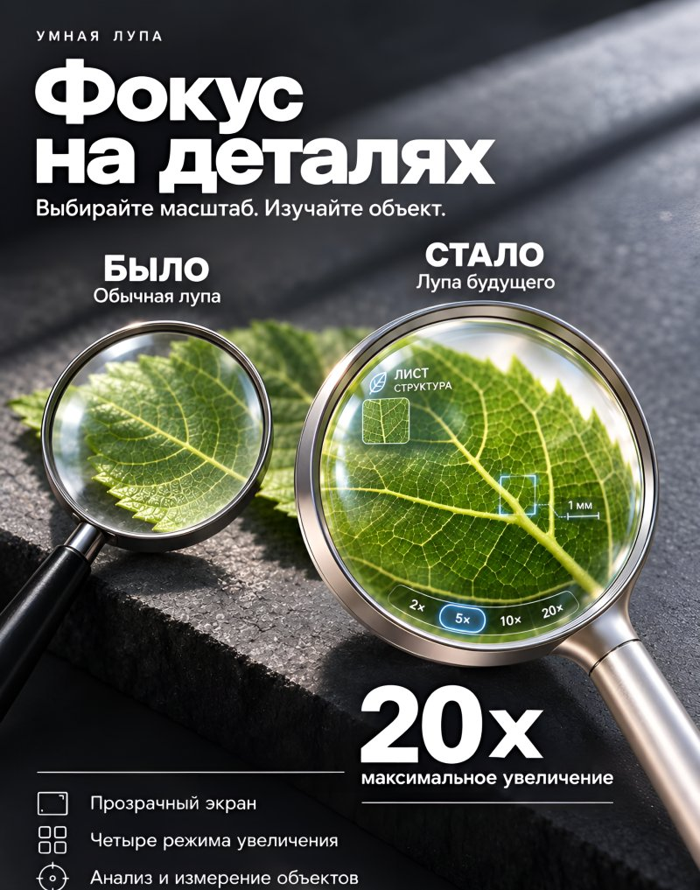

НовинкаУмная лупа
Увидьте больше, чем видит глаз
Обычная лупа просто увеличивает. Умная — понимает, что вы видите: подсказывает прямо на стекле и измеряет детали.
- Четыре режима увеличения — до 20×
- Прозрачный экран с подсказками на линзе
- Распознавание и измерение объектов
20xмаксимальное
увеличение
увеличение